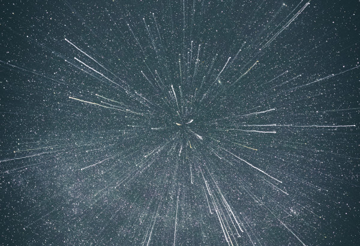

Steptoe Butte is a quartzite island jutting out of the silty loess of the Palouse hills in Whitman County, Washington. The rock that forms the butte is over 400 million years old, in contrast with the 15-7 million year old Columbia River basalts that underlie the rest of the Palouse (such "islands" of ancient rock have come to be called buttes, a butte being defined as a small hill with a flat top, whose width at top does not exceed its height).
A hotel built by Cashup Davis stood atop Steptoe Butte from 1888 to 1908, burning down several years after it closed. In 1946, Virgil McCroskey donated 120 acres (0.49 km2) of land to form Steptoe Butte State Park, which was later increased to over 150 acres (0.61 km2). Steptoe Butte is currently recognized as a National Natural Landmark because of its unique geological value. It is named in honor of Colonel Edward Steptoe.